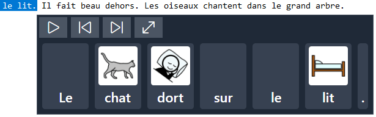
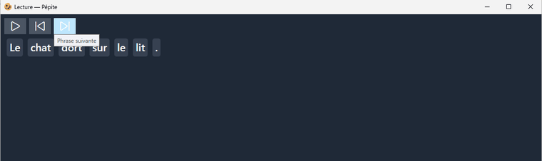

Lire un texte
Un texte long ou difficile ? Pépite te le lit, mot après mot.
Sélectionne le texte : avec la souris, par un double clic sur un mot, ou Ctrl+A pour tout.
La barre devient la barre de lecture : le texte en cases, avec les images.
Appuie sur Espace, sur F9 ou sur le bouton ▶. Pépite lit, et le mot lu devient jaune.

Pépite ne lit jamais tout seul : rien ne se passe tant que tu n'appuies pas sur ▶, Espace ou F9.
Les boutons
| Bouton ou touche | Ce qu'il fait |
|---|---|
| ▶ / ❚❚, Espace ou F9 | Lire, ou faire une pause |
| ⏮ | Relire la phrase d'avant |
| ⏭ | Passer à la phrase suivante |
| ⤢ | Ouvrir la Grande fenêtre |
| Un clic sur une case | Écouter ce mot seul |
| Échap | Revenir aux mots proposés |
Espace et F9 lisent seulement quand la barre de lecture est là. Sinon, Espace écrit une espace, comme d'habitude.
La grande fenêtre
Pour un long texte, clique sur ⤢. Les cases s'affichent dans une grande fenêtre. Tu peux l'agrandir comme tu veux. Elle suit le mot lu.

Revenir aux mots
Recommence à écrire, clique ailleurs dans le texte, ou appuie sur Échap.
Bon à savoir
- Pépite lit jusqu'à 1000 mots à la fois. Au-delà, il affiche
Texte trop long, seuls les 1000 premiers mots sont lus
. - Dans un champ de mot de passe, Pépite ne lit rien.
- Quelques programmes ne donnent pas le texte sélectionné. Un adulte peut cocher, dans les réglages, Copier la sélection par Ctrl+C si l'application ne la donne pas (presse-papiers rétabli).